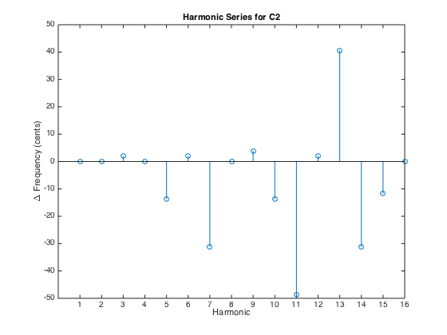

Exercise 1.9.
Write a small computer program to calculate the differences (in cents) between the first 16 harmonics of the note C2 and the center frequencies of the closest notes of the twelve-tone equal-tempered scale (see Figure 1.20). What are the corresponding differences when considering the harmonics of another note such as Bb4?
Contents
Define center frequency for pitch A4 to be 440 Hz.
freq_A4 = 440;
freq_pitch = @(p) freq_A4 * 2.^((p-69)./12);
freq_C2 = freq_pitch(36);
freq_Bb4 = freq_pitch(70);
harmonics = 1:16;
freq_harmonics = freq_C2 * harmonics;
freq_harmonics
% get the whole pitch range
freq_pitches = freq_pitch(0:255);
freq_harmonics =
1.0e+03 *
Columns 1 through 7
0.0654 0.1308 0.1962 0.2616 0.3270 0.3924 0.4578
Columns 8 through 14
0.5233 0.5887 0.6541 0.7195 0.7849 0.8503 0.9157
Columns 15 through 16
0.9811 1.0465
Get the closest pitch for the given frequency of each harmonic.
harmonics_closest_pitch = zeros(numel(harmonics, 1)); harmonics_closest_diff = zeros(numel(harmonics, 1)); for cur_harmonic = 1:numel(harmonics) [~, closest_pitch] = min(abs(freq_harmonics(cur_harmonic)-freq_pitches)); harmonics_closest_pitch(cur_harmonic) = closest_pitch; harmonics_closest_diff(cur_harmonic) = log2(freq_harmonics(cur_harmonic)/freq_pitches(closest_pitch))* 1200; end
Visualization
stem(harmonics_closest_diff); title('Harmonic Series for C2') xlabel('Harmonic') ylabel('\Delta Frequency (cents)') set(gca, 'XTick', harmonics); %xticks(harmonics) ylim([-50, 50])